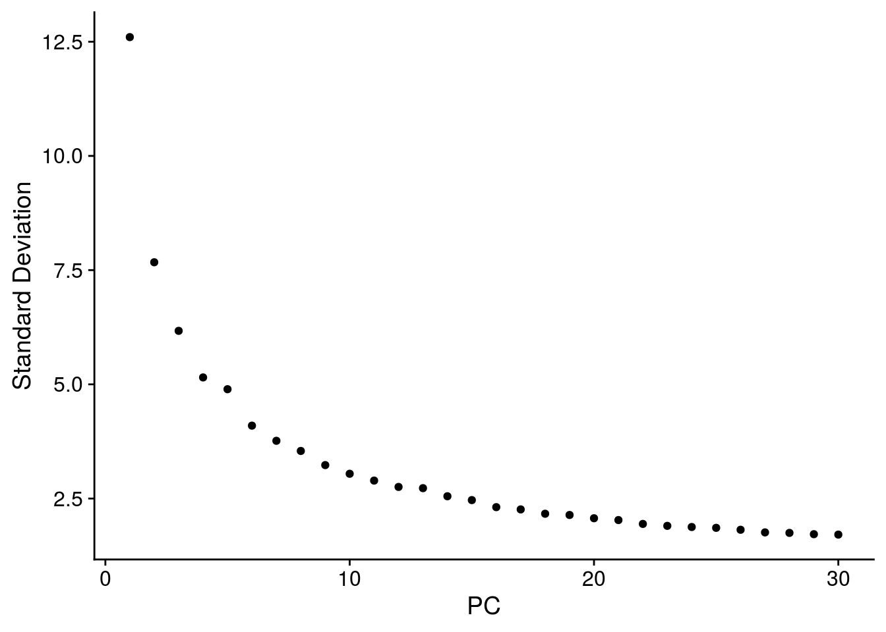

Organoid integration
Katharina Hembach
8/10/2020
Last updated: 2020-08-14
Checks: 6 1
Knit directory: neural_scRNAseq/
This reproducible R Markdown analysis was created with workflowr (version 1.6.2). The Checks tab describes the reproducibility checks that were applied when the results were created. The Past versions tab lists the development history.
Great! Since the R Markdown file has been committed to the Git repository, you know the exact version of the code that produced these results.
Great job! The global environment was empty. Objects defined in the global environment can affect the analysis in your R Markdown file in unknown ways. For reproduciblity it's best to always run the code in an empty environment.
The command set.seed(20200522) was run prior to running the code in the R Markdown file. Setting a seed ensures that any results that rely on randomness, e.g. subsampling or permutations, are reproducible.
Great job! Recording the operating system, R version, and package versions is critical for reproducibility.
- clustering
- dim-red
- dimension-reduction
- future-setup
- import
- integration
- normalization
- reproduce-plots-clustering
- reproduce-plots-dim-red
- reproduce-plots-DR
- reproduce-plots-integration
- reproduce-plots-normalisation
- save-objects
- session-info-chunk-inserted-by-workflowr
- unnamed-chunk-1
- unnamed-chunk-2
- unnamed-chunk-3
- unnamed-chunk-4
- unnamed-chunk-5
- unnamed-chunk-6
- unnamed-chunk-7
- unnamed-chunk-8
- unnamed-chunk-9
- variable-features
To ensure reproducibility of the results, delete the cache directory organoid-01-clustering_cache and re-run the analysis. To have workflowr automatically delete the cache directory prior to building the file, set delete_cache = TRUE when running wflow_build() or wflow_publish().
Great job! Using relative paths to the files within your workflowr project makes it easier to run your code on other machines.
Great! You are using Git for version control. Tracking code development and connecting the code version to the results is critical for reproducibility.
The results in this page were generated with repository version 638915f. See the Past versions tab to see a history of the changes made to the R Markdown and HTML files.
Note that you need to be careful to ensure that all relevant files for the analysis have been committed to Git prior to generating the results (you can use wflow_publish or wflow_git_commit). workflowr only checks the R Markdown file, but you know if there are other scripts or data files that it depends on. Below is the status of the Git repository when the results were generated:
Ignored files:
Ignored: .DS_Store
Ignored: .Rhistory
Ignored: .Rproj.user/
Ignored: ._.DS_Store
Ignored: ._Rplots.pdf
Ignored: .__workflowr.yml
Ignored: ._neural_scRNAseq.Rproj
Ignored: analysis/.DS_Store
Ignored: analysis/.Rhistory
Ignored: analysis/._.DS_Store
Ignored: analysis/._01-preprocessing.Rmd
Ignored: analysis/._01-preprocessing.html
Ignored: analysis/._02.1-SampleQC.Rmd
Ignored: analysis/._03-filtering.Rmd
Ignored: analysis/._04-clustering.Rmd
Ignored: analysis/._04-clustering.knit.md
Ignored: analysis/._04.1-cell_cycle.Rmd
Ignored: analysis/._05-annotation.Rmd
Ignored: analysis/._Lam-0-NSC_no_integration.Rmd
Ignored: analysis/._Lam-01-NSC_integration.Rmd
Ignored: analysis/._Lam-02-NSC_annotation.Rmd
Ignored: analysis/._NSC-1-clustering.Rmd
Ignored: analysis/._NSC-2-annotation.Rmd
Ignored: analysis/.__site.yml
Ignored: analysis/._additional_filtering.Rmd
Ignored: analysis/._additional_filtering_clustering.Rmd
Ignored: analysis/._index.Rmd
Ignored: analysis/._organoid-01-clustering.Rmd
Ignored: analysis/._organoid-02-integration.Rmd
Ignored: analysis/01-preprocessing_cache/
Ignored: analysis/02-1-SampleQC_cache/
Ignored: analysis/02-quality_control_cache/
Ignored: analysis/02.1-SampleQC_cache/
Ignored: analysis/03-filtering_cache/
Ignored: analysis/04-clustering_cache/
Ignored: analysis/04.1-cell_cycle_cache/
Ignored: analysis/05-annotation_cache/
Ignored: analysis/Lam-01-NSC_integration_cache/
Ignored: analysis/Lam-02-NSC_annotation_cache/
Ignored: analysis/NSC-1-clustering_cache/
Ignored: analysis/NSC-2-annotation_cache/
Ignored: analysis/additional_filtering_cache/
Ignored: analysis/additional_filtering_clustering_cache/
Ignored: analysis/organoid-01-clustering_cache/
Ignored: analysis/organoid-02-integration_cache/
Ignored: analysis/sample5_QC_cache/
Ignored: data/.DS_Store
Ignored: data/._.DS_Store
Ignored: data/._.smbdeleteAAA17ed8b4b
Ignored: data/._Lam_figure2_markers.R
Ignored: data/._known_NSC_markers.R
Ignored: data/._known_cell_type_markers.R
Ignored: data/._metadata.csv
Ignored: data/data_sushi/
Ignored: data/filtered_feature_matrices/
Ignored: output/.DS_Store
Ignored: output/._.DS_Store
Ignored: output/._NSC_cluster1_marker_genes.txt
Ignored: output/Lam-01-clustering.rds
Ignored: output/NSC_1_clustering.rds
Ignored: output/NSC_cluster1_marker_genes.txt
Ignored: output/NSC_cluster2_marker_genes.txt
Ignored: output/NSC_cluster3_marker_genes.txt
Ignored: output/NSC_cluster4_marker_genes.txt
Ignored: output/NSC_cluster5_marker_genes.txt
Ignored: output/NSC_cluster6_marker_genes.txt
Ignored: output/NSC_cluster7_marker_genes.txt
Ignored: output/additional_filtering.rds
Ignored: output/figures/
Ignored: output/sce_01_preprocessing.rds
Ignored: output/sce_02_quality_control.rds
Ignored: output/sce_03_filtering.rds
Ignored: output/sce_organoid-01-clustering.rds
Ignored: output/sce_preprocessing.rds
Ignored: output/so_04_1_cell_cycle.rds
Ignored: output/so_04_clustering.rds
Ignored: output/so_additional_filtering_clustering.rds
Ignored: output/so_merged_organoid-02-integration.rds
Ignored: output/so_organoid-01-clustering.rds
Ignored: output/so_sample_organoid-01-clustering.rds
Untracked files:
Untracked: Rplots.pdf
Untracked: analysis/Lam-0-NSC_no_integration.Rmd
Untracked: analysis/additional_filtering.Rmd
Untracked: analysis/additional_filtering_clustering.Rmd
Untracked: analysis/organoid-01-integration.Rmd
Untracked: analysis/organoid-02-integration.Rmd
Untracked: analysis/sample5_QC.Rmd
Untracked: data/Homo_sapiens.GRCh38.98.sorted.gtf
Untracked: data/Kanton_et_al/
Untracked: data/Lam_et_al/
Untracked: scripts/
Unstaged changes:
Modified: analysis/_site.yml
Note that any generated files, e.g. HTML, png, CSS, etc., are not included in this status report because it is ok for generated content to have uncommitted changes.
These are the previous versions of the repository in which changes were made to the R Markdown (analysis/organoid-01-clustering.Rmd) and HTML (docs/organoid-01-clustering.html) files. If you've configured a remote Git repository (see ?wflow_git_remote), click on the hyperlinks in the table below to view the files as they were in that past version.
| File | Version | Author | Date | Message |
|---|---|---|---|---|
| Rmd | 638915f | khembach | 2020-08-14 | organoid clustering |
| html | 5b37055 | khembach | 2020-08-12 | Build site. |
| Rmd | ec375b2 | khembach | 2020-08-12 | Cluster organoid data fromn Kanton et al. 2019 |
Load packages
library(DropletUtils)
library(scDblFinder)
library(BiocParallel)
library(ggplot2)
library(scater)
library(dplyr)
library(cowplot)
library(ggplot2)
library(Seurat)
library(SingleCellExperiment)
library(stringr)
library(Seurat)
library(rtracklayer)
library(future)
library(data.table)# increase future's maximum allowed size of exported globals to 5GB
# the default is 2GB
options(future.globals.maxSize = 5000 * 1024 ^ 2)
# change the current plan to access parallelization
plan("multiprocess", workers = 20)Importing CellRanger output and metadata
fs <- file.path("data", "Kanton_et_al", "files")
sce <- read10xCounts(samples = fs, sample.names = "organoids")
# rename colnames and dimnames
names(rowData(sce)) <- c("ensembl_id", "symbol", "type")
names(colData(sce)) <- c("sample_id", "barcode")
# load metadata
meta <- read.csv(file.path("data", "Kanton_et_al", "metadata.csv"))
colData(sce) <- cbind(colData(sce), meta[, colnames(meta != "Barcode")])
sce$sample_id <- factor(sce$sample_id)
dimnames(sce) <- list(with(rowData(sce), paste(ensembl_id, symbol, sep = ".")),
with(colData(sce), paste(barcode, Sample, sep = ".")))Overview of the data
table(colData(sce)$Line)
409b2 H9 Hoik1 Kucg2 Sc102a1 Sojd3 Wibj2
24983 25543 3583 4704 10408 4144 17211 table(colData(sce)$Stage)
EB iPSCs Neuroectoderm Neuroepithelium Organoid-1M
3300 4300 2757 1363 5070
Organoid-2M Organoid-4M
62306 11480 table(colData(sce)$Sample)
h409B2_120d_org1 h409B2_128d_org1 h409B2_60d_org1
3179 3915 6354
h409B2_67d_org1 h409B2_EB h409B2_iPSCs
4992 855 1943
h409B2_neuroectoderm h409B2_neuroepithelium h409B2_Org_32d
886 443 2416
H9_128d_org1 H9_60d_org1 H9_67d_org1
4386 5899 5011
H9_EB H9_iPSCs H9_neuroectoderm
2445 2357 1871
H9_neuroepithelium H9_Org_32d hoik_HipSci_1
920 2654 1168
hoik_HipSci_2 hoik_HipSci_3 kucg_HipSci_1
1533 882 1456
kucg_HipSci_2 kucg_HipSci_3 SC102A1_65d_org1
1322 1926 5231
SC102A1_65d_org2 sojd_HipSci_1 sojd_HipSci_2
5177 1247 1122
sojd_HipSci_3 wibj_64d_org1 wibj_64d_org2
1775 5823 6272
wibj_HipSci_1 wibj_HipSci_2 wibj_HipSci_3
1774 1516 1826 table(colData(sce)$PredCellType)
Astrocyte Astrocyte/RG Choroid Choroid/RG EN
651 4 1725 1 27146
EN/Glyc EN/IN Endothelial Glyc Glyc/IN
11 7 5 15292 2
Glyc/Microglia Glyc/Mural Glyc/RG IN IN/IPC
1 1 4 14482 1
IN/Microglia IPC IPC/RG Microglia Mural
1 13549 2 344 210
OPC RG
45 17092 ## The cells for Fig. 1a-d, Extended Data Fig. 2
table(colData(sce)$in_FullLineage)
FALSE TRUE
47078 43498 ## The cells for Fig. 1e
table(colData(sce)$in_LineComp)
FALSE TRUE
41423 49153 ## Cluster labels for Extended Data Fig. 2
table(colData(sce)$cl_FullLineage)
choroid plexus/mesenchymal-like cells cortical neurons 1
371 2967
cortical neurons 2 cycling dorsal progenitors
2557 1701
cycling ventral progenitors ectodermal/neuroectodermal-like cells
1022 870
gliogenic/outer RGCs and astrocytes IPs and early cortical neurons
1936 1710
midbrain/hindbrain cells neuroepithelial-like cells
3296 3230
retina progenitors RGCs 3
1145 3562
RGCs early 1 RGCs early 2
2600 885
stem cells 1 stem cells 2
1279 5652
stem cells 3 ventral progenitors and neurons 1
672 1576
ventral progenitors and neurons 2 ventral progenitors and neurons 3
1899 4568 ## Cluster labels
table(colData(sce)$cl_LineComp)
Cerebellar glutamatergic neurons 1 Cerebellar glutamatergic neurons 2
2237 923
Cortical IPs Cortical neurons
6407 12148
Cortical NPCs LGE interneurons
9104 3081
MGE/CGE interneurons Mid-hindbrain NPCs
6587 1857
Midbrain GABAergic interneurons Purkinje cells
458 600
Ventral NPCs
3574 The dataset consists of 10X scRNA-seq from organoid development using embryonic stem cells (H9) and an iPSC (409b2) line. The cells for figure 1 a-d are labeled in column in_FullLineage and figure 1e in in_LineComp.
Quality control
We remove undetected genes and check cell-level QC that came with the data.
sce <- sce[rowSums(counts(sce) > 0) > 0, ]
dim(sce)[1] 28601 90576# library size
summary(sce$nUMI) Min. 1st Qu. Median Mean 3rd Qu. Max.
1743 4803 6918 8417 10385 59266 # number of detected genes per cell
summary(sce$nGene) Min. 1st Qu. Median Mean 3rd Qu. Max.
223 1906 2453 2601 3148 5999 # percentage of counts that come from mitochondrial genes:
summary(sce$PercentMito) Min. 1st Qu. Median Mean 3rd Qu. Max.
0.00000 0.01688 0.02674 0.02770 0.03678 0.09998 It seems the cells are already filtered based on the number of detected genes. From the methods section of the paper: "Cells with more than 6,000 or less than 200 detected genes, as well as those with mitochondrial transcripts proportion higher than 5% were excluded"
Diagnostic plots
The number of counts per cell:
plotColData(sce, x = "sample_id", y = "nUMI") + scale_y_log10()
| Version | Author | Date |
|---|---|---|
| 5b37055 | khembach | 2020-08-12 |
The number of genes:
plotColData(sce, x = "sample_id", y = "nGene") + scale_y_log10()
| Version | Author | Date |
|---|---|---|
| 5b37055 | khembach | 2020-08-12 |
The percentage of mitochondrial genes:
plotColData(sce, x = "sample_id", y = "PercentMito")
| Version | Author | Date |
|---|---|---|
| 5b37055 | khembach | 2020-08-12 |
Normalization
We try to recreate Extended Data Fig. 2 a-e.
## subset the cells
sce_all <- sce
sce <- sce[, sce$in_FullLineage]
dim(sce)[1] 28601 43498# create SeuratObject
so <- CreateSeuratObject(
counts = counts(sce),
meta.data = data.frame(colData(sce)),
project = "organoids")
# split by sample
cells_by_sample <- split(colnames(sce), sce$Sample)
so <- lapply(cells_by_sample, function(i) subset(so, cells = i))
## log normalize the data using a scaling factor of 10000
so <- lapply(so, NormalizeData, verbose = FALSE, scale.factor = 10000,
normalization.method = "LogNormalize")Integration of H9 and 409b2
so_all <- so
sub_samples <- unique(c(colData(sce)[sce$Line %in% c("H9","409b2"),]$Sample))
so <- so[sub_samples]
## Identify the top 2000 genes with high cell-to-cell variation
so <- lapply(so, FindVariableFeatures, nfeatures = 2000,
selection.method = "vst", verbose = FALSE)# find anchors & integrate
as <- FindIntegrationAnchors(so, verbose = FALSE)
so <- IntegrateData(anchorset = as, dims = seq_len(20), verbose = FALSE)
#
# ## We scale the data so that mean expression is 0 and variance is 1, across cells
# ## We also regress out the number of UMIs.
# ## We don't have mitochondrial genes for the NES
# DefaultAssay(so) <- "integrated"
so <- ScaleData(so, verbose = FALSE, vars.to.regress = c("nGene", "PercentMito"))Dimension reduction
We perform dimension reduction with t-SNE and UMAP based on PCA results.
so <- RunPCA(so, npcs = 30, verbose = FALSE)
so <- RunTSNE(so, reduction = "pca", dims = seq_len(20),
seed.use = 1, do.fast = TRUE, verbose = FALSE)
so <- RunUMAP(so, reduction = "pca", dims = seq_len(20),
seed.use = 1, verbose = FALSE)Clustering
We cluster the cells using the reduced PCA dimensions.
so <- FindNeighbors(so, reduction = "pca", dims = seq_len(20), verbose = FALSE)
for (res in c(0.4, 0.6, 0.8))
so <- FindClusters(so, resolution = res, random.seed = 1, verbose = FALSE)Dimension reduction plots
We plot the dimension reduction (DR) and color by cell line, sample, predicted cell type, cluster ID
# set cluster IDs to resolution 0.4 clustering
so <- SetIdent(so, value = "integrated_snn_res.0.6")
so@meta.data$cluster_id <- Idents(so)
cs <- sample(colnames(so), 10e3)
.plot_dr <- function(so, dr, id)
DimPlot(so, cells = cs, group.by = id, reduction = dr, pt.size = 0.4) +
guides(col = guide_legend(nrow = 11,
override.aes = list(size = 3, alpha = 1))) +
theme_void() + theme(aspect.ratio = 1)
ids <- c("Line", "Sample", "Stage","cl_FullLineage", "ident")
for (id in ids) {
cat("### ", id, "\n")
p1 <- .plot_dr(so, "tsne", id)
lgd <- get_legend(p1)
p1 <- p1 + theme(legend.position = "none")
p2 <- .plot_dr(so, "umap", id) + theme(legend.position = "none")
ps <- plot_grid(plotlist = list(p1, p2), nrow = 1)
p <- plot_grid(ps, lgd, nrow = 1, rel_widths = c(1, 0.5))
print(p)
cat("\n\n")
}
Reproduction of the paper figures
In the paper, the authors used CCA to integrate the H9 and 409b2 cells in a single tSNE plot. We try to use the exact same approach to see if we can reproduce their Extended data figure 2a.
## They describe their pipeline as follows:
## Seurat v3 CCA
## log-normalisation
## highly variable genes with vst (for 409b2 and H9 cells)
## integration using top 20 CCs using the Seurat method by identifying anchors and integrating the datasets
## scale data
## PCA
## clustering based on top 20 PCs, resolution of 0.6
## feature plots with non-integrated expression values
# create SeuratObject for the H9 and 409b2 cells
so <- CreateSeuratObject(
counts = counts(sce),
meta.data = data.frame(colData(sce)),
project = "organoids")
# split by cell line instead of sample as before
cells_by_sample <- split(colnames(sce), sce$Line)
so <- lapply(cells_by_sample, function(i) subset(so, cells = i))
## log normalize the data using a scaling factor of 10000
so <- lapply(so, NormalizeData, verbose = FALSE, scale.factor = 10000,
normalization.method = "LogNormalize")
## Identify the top 2000 genes with high cell-to-cell variation
so <- lapply(so, FindVariableFeatures, nfeatures = 2000,
selection.method = "vst", verbose = FALSE)# find anchors & integrate
as <- FindIntegrationAnchors(so, verbose = FALSE, dims = 1:20)
so <- IntegrateData(anchorset = as, dims = seq_len(20), verbose = FALSE)
# ## We scale the data without regressing out any factors
so <- ScaleData(so, verbose = FALSE)so <- RunPCA(so, npcs = 30, verbose = FALSE)
so <- RunTSNE(so, reduction = "pca", dims = seq_len(20),
seed.use = 1, do.fast = TRUE, verbose = FALSE)
so <- RunUMAP(so, reduction = "pca", dims = seq_len(20),
seed.use = 1, verbose = FALSE)
## PCA plot
DimPlot(so, reduction = "pca", group.by = "sample_id")# elbow plot with the ranking of PCs based on the % of variance explained
ElbowPlot(so, ndims = 30)
so <- FindNeighbors(so, reduction = "pca", dims = seq_len(20), verbose = FALSE)
so <- FindClusters(so, resolution = 0.6, random.seed = 1, verbose = FALSE)Dimension reduction plots
We plot the dimension reduction (DR) and color by cell line, sample, predicted cell type, cluster ID
# set cluster IDs to resolution 0.4 clustering
so <- SetIdent(so, value = "integrated_snn_res.0.6")
so@meta.data$cluster_id <- Idents(so)
cs <- sample(colnames(so), 10e3)
.plot_dr <- function(so, dr, id)
DimPlot(so, cells = cs, group.by = id, reduction = dr, pt.size = 0.4) +
guides(col = guide_legend(nrow = 11,
override.aes = list(size = 3, alpha = 1))) +
theme_void() + theme(aspect.ratio = 1)
ids <- c("Line", "Sample", "Stage","cl_FullLineage", "ident")
for (id in ids) {
cat("### ", id, "\n")
p1 <- .plot_dr(so, "tsne", id)
lgd <- get_legend(p1)
p1 <- p1 + theme(legend.position = "none")
p2 <- .plot_dr(so, "umap", id) + theme(legend.position = "none")
ps <- plot_grid(plotlist = list(p1, p2), nrow = 1)
p <- plot_grid(ps, lgd, nrow = 1, rel_widths = c(1, 0.5))
print(p)
cat("\n\n")
}Line
Sample
Stage
cl_FullLineage
ident
Save Seurat object to RDS
## Seurat object integrated by sample
saveRDS(so_sample, file.path("output", "so_sample_organoid-01-clustering.rds"))
## Seurat object integrated by cell line
saveRDS(so, file.path("output", "so_organoid-01-clustering.rds"))
saveRDS(sce_all, file.path("output", "sce_organoid-01-clustering.rds"))
sessionInfo()R version 4.0.0 (2020-04-24)
Platform: x86_64-pc-linux-gnu (64-bit)
Running under: Ubuntu 16.04.6 LTS
Matrix products: default
BLAS: /usr/local/R/R-4.0.0/lib/libRblas.so
LAPACK: /usr/local/R/R-4.0.0/lib/libRlapack.so
locale:
[1] LC_CTYPE=en_US.UTF-8 LC_NUMERIC=C
[3] LC_TIME=en_US.UTF-8 LC_COLLATE=en_US.UTF-8
[5] LC_MONETARY=en_US.UTF-8 LC_MESSAGES=en_US.UTF-8
[7] LC_PAPER=en_US.UTF-8 LC_NAME=C
[9] LC_ADDRESS=C LC_TELEPHONE=C
[11] LC_MEASUREMENT=en_US.UTF-8 LC_IDENTIFICATION=C
attached base packages:
[1] parallel stats4 stats graphics grDevices utils datasets
[8] methods base
other attached packages:
[1] data.table_1.12.8 future_1.17.0
[3] rtracklayer_1.48.0 stringr_1.4.0
[5] Seurat_3.1.5 cowplot_1.0.0
[7] dplyr_1.0.0 scater_1.16.2
[9] ggplot2_3.3.2 BiocParallel_1.22.0
[11] scDblFinder_1.2.0 DropletUtils_1.8.0
[13] SingleCellExperiment_1.10.1 SummarizedExperiment_1.18.1
[15] DelayedArray_0.14.0 matrixStats_0.56.0
[17] Biobase_2.48.0 GenomicRanges_1.40.0
[19] GenomeInfoDb_1.24.2 IRanges_2.22.2
[21] S4Vectors_0.26.1 BiocGenerics_0.34.0
[23] workflowr_1.6.2
loaded via a namespace (and not attached):
[1] backports_1.1.8 plyr_1.8.6
[3] igraph_1.2.5 lazyeval_0.2.2
[5] splines_4.0.0 listenv_0.8.0
[7] digest_0.6.25 htmltools_0.5.0
[9] viridis_0.5.1 magrittr_1.5
[11] cluster_2.1.0 ROCR_1.0-11
[13] limma_3.44.3 globals_0.12.5
[15] Biostrings_2.56.0 R.utils_2.9.2
[17] colorspace_1.4-1 rappdirs_0.3.1
[19] ggrepel_0.8.2 xfun_0.15
[21] crayon_1.3.4 RCurl_1.98-1.2
[23] jsonlite_1.7.0 survival_3.2-3
[25] zoo_1.8-8 ape_5.4
[27] glue_1.4.1 gtable_0.3.0
[29] zlibbioc_1.34.0 XVector_0.28.0
[31] leiden_0.3.3 BiocSingular_1.4.0
[33] Rhdf5lib_1.10.0 future.apply_1.6.0
[35] HDF5Array_1.16.1 scales_1.1.1
[37] edgeR_3.30.3 Rcpp_1.0.4.6
[39] viridisLite_0.3.0 reticulate_1.16
[41] dqrng_0.2.1 rsvd_1.0.3
[43] tsne_0.1-3 htmlwidgets_1.5.1
[45] httr_1.4.1 RColorBrewer_1.1-2
[47] ellipsis_0.3.1 ica_1.0-2
[49] farver_2.0.3 pkgconfig_2.0.3
[51] XML_3.99-0.4 R.methodsS3_1.8.0
[53] uwot_0.1.8 locfit_1.5-9.4
[55] labeling_0.3 tidyselect_1.1.0
[57] rlang_0.4.6 reshape2_1.4.4
[59] later_1.1.0.1 munsell_0.5.0
[61] tools_4.0.0 generics_0.0.2
[63] ggridges_0.5.2 evaluate_0.14
[65] yaml_2.2.1 knitr_1.29
[67] fs_1.4.2 fitdistrplus_1.1-1
[69] purrr_0.3.4 randomForest_4.6-14
[71] RANN_2.6.1 pbapply_1.4-2
[73] nlme_3.1-148 whisker_0.4
[75] scran_1.16.0 R.oo_1.23.0
[77] compiler_4.0.0 beeswarm_0.2.3
[79] plotly_4.9.2.1 png_0.1-7
[81] tibble_3.0.1 statmod_1.4.34
[83] stringi_1.4.6 RSpectra_0.16-0
[85] lattice_0.20-41 Matrix_1.2-18
[87] vctrs_0.3.1 pillar_1.4.4
[89] lifecycle_0.2.0 lmtest_0.9-37
[91] RcppAnnoy_0.0.16 BiocNeighbors_1.6.0
[93] bitops_1.0-6 irlba_2.3.3
[95] httpuv_1.5.4 patchwork_1.0.1
[97] R6_2.4.1 promises_1.1.1
[99] KernSmooth_2.23-17 gridExtra_2.3
[101] vipor_0.4.5 codetools_0.2-16
[103] MASS_7.3-51.6 rhdf5_2.32.2
[105] rprojroot_1.3-2 withr_2.2.0
[107] GenomicAlignments_1.24.0 Rsamtools_2.4.0
[109] sctransform_0.2.1 GenomeInfoDbData_1.2.3
[111] grid_4.0.0 tidyr_1.1.0
[113] rmarkdown_2.3 DelayedMatrixStats_1.10.1
[115] Rtsne_0.15 git2r_0.27.1
[117] ggbeeswarm_0.6.0